Let’s start by creating a player, that can move around your world.
Activity Checklist
Start a new Scratch project, and delete the cat sprite so that your project is empty. You can find the online Scratch editor at jumpto.cc/scratch-new.
For this project, you should have a ‘Project Resources’ folder, containing all of the images you’ll need. Make sure that you can find this folder, and ask your club leader if you can’t find it.
screenshot
Add the image ‘room1.png’ as a new stage backdrop, and the image ‘player.png’ as a new sprite. If you don’t have these images you can draw them yourself! Here’s how your project should look:
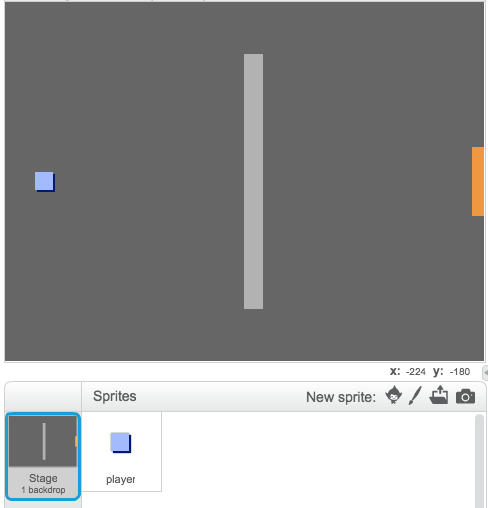screenshot
Let’s use the arrow keys to move the player around. When the player presses the up arrow, you want the player to move up, by changing it’s y-coordinate. Add this code to the player sprite:
when flag clicked
forever
if <key [up arrow v] pressed? > then
change y by (2)
end
end
Test out your player by clicking the flag and then holding down the up arrow. Does your player move up?
screenshot
To move the player to the left, you need to add another if block to your player, which changes the x-coordinate:
when flag clicked
forever
if <key [up arrow v] pressed? > then
change y by (2)
end
if <key [left arrow v] pressed? > then
change x by (-2)
end
end
Challenge: Moving in all four directions
Can you add more code to your player, so that they can move up, down, left and right. Use the code you already have to help you!
Save your project
Test out your player again, and you’ll see they have the ability to walk through the light-grey walls.
screenshot
To fix this, you need to move the player, but then move them back if they’re touching a light-grey wall. Here’s the code you’ll need:
when flag clicked
forever
if <key [up arrow v] pressed? > then
change y by (2)
if < touching color [#BABABA]? > then
change y by (-2)
end
end
end
Notice that the new iftouching color block is inside the ifkey [up arrow] block.
Test this new code, by moving below the wall - you shouldn’t be able to move up into it.
screenshot
Let’s do the same for the left arrow, moving back if the player is touching a wall. This is how your player code should look so far:
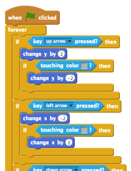screenshot
Challenge: Fixing your player’s movement
Add code to your player, so that you can’t walk through walls in any direction. Use the code you already have to help you!
Save your project
Step 2: Coding your world
Let’s allow the player to walk through doors into other rooms!
Activity Checklist
Add 2 more backdrops to your stage (‘room2.png’ and ‘room3.png’), so that you have 3 backdrops in total. Make sure that they are in the right order - this will help you later.
screenshot
You’ll need a new variable called room, to keep track of what room the player is in.
screenshot
When the player touches the orange door in the first room, the next backdrop should be displayed, and the player should move back to the left side of the stage. Here’s the code you’ll need - it should go inside the player’s forever loop:
if < touching color [#F2A24A] > then
switch backdrop to [next backdrop v]
go to x: (-200) y: (0)
change [room v] by (1)
end
Add this code to the start of your player code (before the forever loop, to make sure that everything is reset when the flag is clicked:
set [room v] to (1)
go to x: (-200) y: (0)
switch backdrop to [room1 v]
Click the flag and move your player over the orange door. Does your player move to the next screen? Does the room variable change to 2?
screenshot
Challenge: Moving to the previous room
Can you make your player move to the previous room when they touch a yellow door? Remember that this code will be very similar to the code you’ve already added for moving to the next room.
Save your project
Step 3: Signs
Let’s add signs to your world, to guide your player on their journey.
Activity Checklist
Upload the image ‘sign.png’ as a new sprite, and rename the sprite ‘welcome sign’.
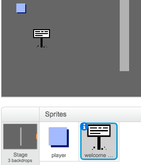screenshot
This sign will only be visible in room 1, so let’s add some code to the sign to make sure that this happens:
when flag clicked
forever
if < (room) = [1] > then
show
else
hide
end
end
Test your sign by moving between rooms. Your sign should only be visible in room 1.
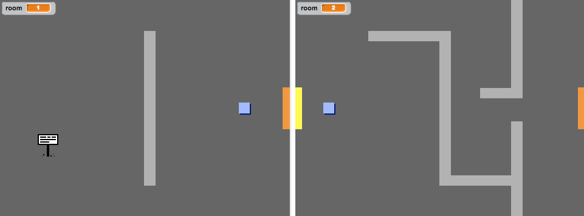screenshot
A sign isn’t much good if it doesn’t say anything! Let’s add some more code (in another separate block) to display a message if the sign is touching the player:
when flag clicked
forever
if < touching [player v]? > then
say [Welcome! Can you get to the treasure?]
else
say []
end
end
Test out your sign, and you should see a message when the player touches it.
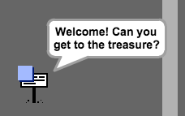screenshot
Save your project
Challenge: Treasure!
Can you add a new treasure chest sprite, using the image ‘chest.png’. This treasure chest should be placed in room 3, and should say ‘Well done!’ when the player touches it.
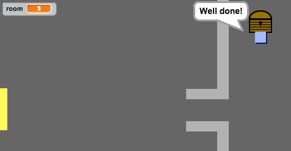screenshot
Save your project
Step 4: People
Let’s add other people to your world, that your player can interact with.
Activity Checklist
Add in a new person sprite, using the image ‘person.png’.
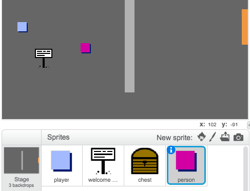screenshot
Add in this code, so that the person talks to your player. This code is very similar to the code you added to your sign:
when flag clicked
go to x: (-200) y: (0)
forever
if < touching [player v]? > then
say [Did you know that you can go through orange and yellow doors?]
else
say []
end
end
You could also allow your player to move, by using these two blocks:
move (1) steps
if on edge, bounce
Your player will act differently, depending on whether you place this code inside the forever loop or the if block. Try both and see which you prefer.
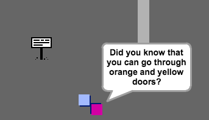screenshot
Have you noticed that your person flips upside-down. To stop this, click the sprite’s information icon (i), and click the dot to fix to rotation style.
screenshot
Challenge: Improving your person
Can you add code to your new person, so that they only appear in room 1? Make sure you test out your new code!
Save your project
You can also add in patrolling enemies, who end the game if the player touches them. Add in a new enemy sprite, and change the rotation style, just like you did with the ‘person’ sprite.
Add code to your enemy, so that they only appear in room 2.
You’ll also need to add code to move the enemy, and to end the game if the enemy touches the player. It’s easier to do this in separate code blocks. Here’s how your enemy code should look:
screenshot
Test out your enemy, to make sure that:
It’s only visible in room 2;
It patrols the room;
The game ends if the player touches it.
Save your project
Challenge: More enemies
Can you create another enemy in room 3, that patrols up and down through the gap in the wall?
screenshot
Save your project
Step 5: Collecting coins
Activity Checklist
Add a new variable valled coins to your project.
Add a new ‘coin’ sprite to your project.
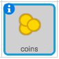screenshot
Add code to your coins, so that they only appear in room 1.
Add code to your coin sprite, to add 3 to your coins once they’ve been picked up:
when flag clicked
wait until <touching [player v]?>
change [coins v] by (3)
stop [other scripts in sprite v]
hide
The code stop other scripts in sprite is needed so that the coins stop being displayed in room 1 once they’ve been collected.
You’ll also need to add code to set your coins variable to 0 at the start of your game.
Test your project - collecting your coins should change your score to 3
Challenge: More coins
Can you add more coins to your game? They can be in different rooms, and some coins could even be guarded by patroling enemies.
Step 6: Doors and keys
Activity Checklist
Create a new sprite from your ‘key-blue.png’ image. Switch your stage to backdrop 3, and place the key somewhere difficult to reach!
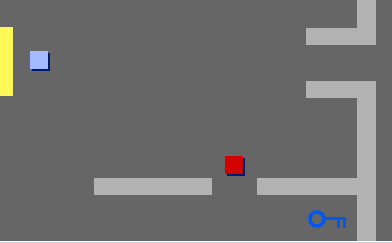screenshot
Make sure that your key is only visible in room 3.
Create a new list variable called inventory. This will be where you store all of the items your player collects.
The code for collecting the key is very similar to the code for collecting coins. The difference is that you add the key to your inventory.
when flag clicked
wait until <touching [player v]?>
add [blue key] to [inventory v]
stop [other scripts in sprite v]
hide
Test out your key, to see if you can collect it, and add it to your inventory. Remember to add code to your stage to empty your inventory at the start.
delete (all v) of [inventory v]
Create a new sprite from your ‘door-blue.png’ image, and place your blue door across the gap in the 2 walls.
screenshot
Add code to your door, so that it is only visible in room 3.
You’ll need to hide your blue door to allow your player to pass once you have the blue key in your inventory.
when flag clicked
wait until <[inventory v] contains [blue key]>
stop [other scripts in sprite v]
hide
Test out your project, and see if you can collect the blue key to open the door!
Save your project
Challenge: Create your own world
You can now continue creating your own world. Here are some ideas:
Change the setting of your game, and your game graphics;
Add sound and music to your game;
Add more people, enemies, signs and coins;
Add red and yellow doors, that need their own keys to open them;
Add more rooms to your world;
Add other useful items to your game;
Use coins to get information from other people;
screenshot
You could even add north and south doors, so that the player can move between rooms in all 4 directions. For example, if you had 9 rooms, you could think of them as being in a 3x3 grid. You can then add 3 to the room number to move down 1 level.
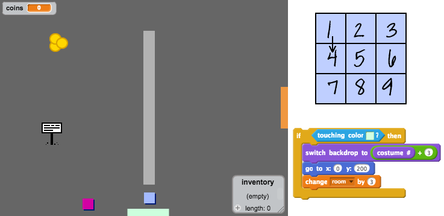screenshot
Save your project
Hi there!
Seems like this is your first time here. Would you like a tour?